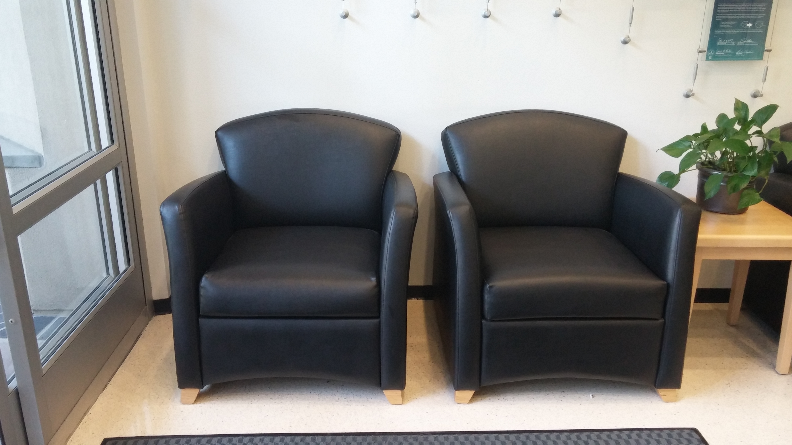

Running the Inception v3 Model in Windows¶
Overview¶
The example C++ application in this tutorial is called snpe-net-run.exe. It is a command line executable that executes a neural network using Qualcomm® Neural Processing SDK APIs.
The required arguments to snpe-net-run are:
A neural network model in the DLC file format
An input list file with paths to the input data.
Optional arguments to snpe-net-run.exe are:
Choice of CPU, DSP runtimes (default is CPU)
Output directory (default is .\output)
Show help description
snpe-net-run creates and populates an output directory with the results of executing the neural network on the input data.

The Qualcomm® Neural Processing SDK provides Windows binaries of snpe-net-run.exe under
$SNPE_ROOT/bin/x86_64-windows-msvc
$SNPE_ROOT/bin/aarch64-windows-msvc
The Qualcomm® Neural Processing SDK also provides SNPE.dll under
$SNPE_ROOT/lib/x86_64-windows-msvc/SNPE.dll
$SNPE_ROOT/lib/aarch64-windows-msvc/SNPE.dll
Prerequisites
The Qualcomm® Neural Processing SDK (Linux Version) has been set up following the Qualcomm (R) Neural Processing SDK Setup.
The Tutorials Setup has been completed on the Linux host.
TensorFlow is installed on the Linux host(see TensorFlow Setup)
The Qualcomm® Neural Processing SDK (Windows Version) installed.
Python3.x is installed on the Windows host.
Introduction¶
The Inception v3 Imagenet classification model is trained to classify images with 1000 labels.
The DLC for the model used in this tutorial was generated and optimized using the TensorFlow optimizer tool, during the Getting Inception v3 portion of the Tutorials Setup , by the script $SNPE_ROOT/examples/Models/InceptionV3/scripts/setup_inceptionv3_snpe.py. Additionally, if a fixed-point runtime such as DSP was selected when running the setup script, the model was quantized by snpe-dlc-quantize.
Run on Windows Host¶
At this point, you should have an InceptionV3 folder in $SNPE_ROOT/examples/Models/InceptionV3 on the Linux host. Copy it to the Windows host or the device where you are going to run snpe-net-run.exe. Before you run snpe-net-run.exe, you need to modify the input file list:
InceptionV3/data/cropped/raw_list.txt
data/cropped/notice_sign.raw data/cropped/trash_bin.raw data/cropped/chairs.raw data/cropped/plastic_cup.rawNote
Please note that paths with spaces are not supported in input lists. If you are using $SNPE_ROOT/examples/Models/InceptionV3/scripts/create_file_list.py to generate the input list, using the -r option will enable usage of relative paths instead of absolute paths, which can be helpful to get around this.Execute the following command to setup essential components(
$SDK_ROOTis the location of Qualcomm® Neural Processing SDK):& "$SDK_ROOT\bin\envsetup.ps1"Navigate to the InceptionV3 folder and run snpe-net-run.exe in the same session powershell that had setup the environment with envsetup.ps1
cd InceptionV3 snpe-net-run --container dlc/inception_v3.dlc --input_list data/cropped/raw_list.txtAfter few seconds, you should see the results in InceptionV3/output/.
One of the inputs is data/cropped/chairs.raw and it was created from data/cropped/chairs.jpg which looks like the following:
With this input, snpe-net-run created the output file $SNPE_ROOT/examples/Models/InceptionV3/output/Result_0/InceptionV3/Predictions/Reshape_1_0.raw. It holds the output tensor data of 1000 probabilities for the 1000 categories. The element with the highest value represents the top classification. A python script to interpret the classification results is provided and can be used as follows:
python3 scripts/show_inceptionv3_classifications_snpe.py -i data/cropped/raw_list.txt \ -o output/ \ -l data/imagenet_slim_labels.txtThe output should look like the following, showing classification results for all the images.
Classification results ./data/cropped/notice_sign.raw 0.167454 459 brass ./data/cropped/trash_bin.raw 0.684571 413 ashcan ./data/cropped/chairs.raw 0.382223 832 studio couch ./data/cropped/plastic_cup.raw 0.990612 648 measuring cupBinary data input
Note that the Inception v3 image classification model does not accept jpg files as input. The model expects its input tensor dimension to be 299x299x3 as a float array. The scripts/setup_inception_v3_snpe.py script performs a jpg to binary data conversion by calling scripts/create_inception_v3_raws.py. The scripts are an example of how jpg images can be preprocessed to generate input for the Inception v3 model.
{kind=link}
Run on Windows Target¶
Select target architecture
Qualcomm® Neural Processing SDK provides Windows binaries for arm64-v8a architectures. The Qualcomm® Neural Processing SDK provides Windows binaries of snpe-net-run.exe and SNPE.dll under the paths mentioned above. You also need to manually upload msvcp140.dll and vcruntime140.dll - which are provided by Visual Studio - to your device so that snpe-net-run.exe has complete runtime support.
Push binaries to target
Push the Qualcomm® Neural Processing SDK libraries and the prebuilt snpe-net-run.exe executable to the InceptionV3 folder and then copy the folder to your Windows device. For example, you can copy the InceptionV3 folder using tshell or network.
After this you can run as is on the Windows host. If you have no Python3.x installed on the Windows device, you need to copy the output folder back to the Windows host.
After executing, check the classification results by running the following python script:
python3 scripts/show_inceptionv3_classifications_snpe.py -i data/target_raw_list.txt \ -o output/ \ -l data/imagenet_slim_labels.txtThe output should appear as shown above, showing classification results for all the images.
Running on Windows using DSP Runtime¶
Note
You need to put the following files in the directory where SNPE.dll resides.
- dsp shared object file:
SC8180X: $SNPE_ROOT/lib/hexagon-v66/unsigned/libSnpeDspV66Skel.so
SC8280X: $SNPE_ROOT/lib/hexagon-v68/unsigned/libSnpeHtpV68Skel.so
SC8380XP: $SNPE_ROOT/lib/hexagon-v73/unsigned/libSnpeHtpV73Skel.so
- dsp dynamic link library file:
SC8180X : $SNPE_ROOT/lib/aarch64-windows-msvc/SnpeDspV66Stub.dll
SC8280X : $SNPE_ROOT/lib/aarch64-windows-msvc/SnpeHtpV68Stub.dll
SC8380XP: $SNPE_ROOT/lib/aarch64-windows-msvc/SnpeHtpV73Stub.dll
SC8380XP: $SNPE_ROOT/lib/arm64x-windows-msvc/SnpeHtpV73Stub.dll
- on-device prepared graph library (required by HTP backend):
SC8280X : $SNPE_ROOT/lib/aarch64-windows-msvc/SnpeHtpPrepare.dll
SC8380XP: $SNPE_ROOT/lib/aarch64-windows-msvc/SnpeHtpPrepare.dll
SC8380XP: $SNPE_ROOT/lib/arm64x-windows-msvc/SnpeHtpPrepare.dll
Try running on a Windows target with the --use_dsp option as follows:
snpe-net-run.exe --container inception_v3_quantized.dlc --input_list target_raw_list.txt --use_dspCheck the classification results by running the following python script:
python3 scripts/show_inceptionv3_classifications_snpe.py -i data/target_raw_list.txt \ -o output/ \ -l data/imagenet_slim_labels.txtThe output should look like the one as cpu runtime outputs, showing classification results for all the images.
Classification results are identical to the run with CPU runtime, but there are differences in the probabilities associated with the output labels due to floating point precision differences.